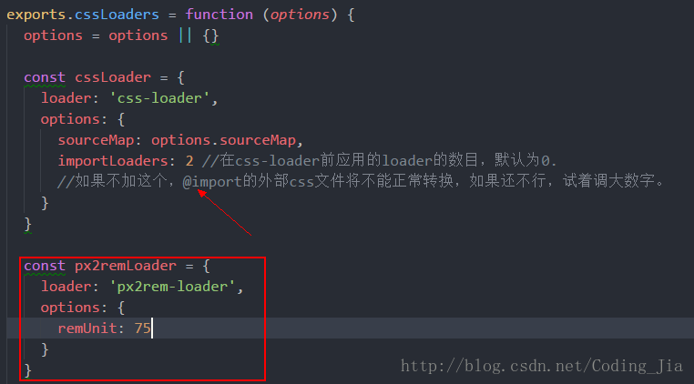
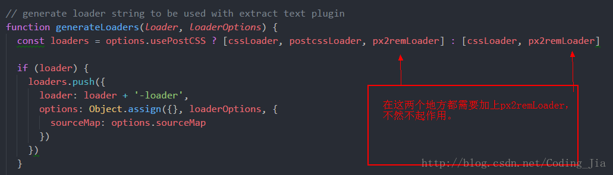

最近在用vue做移动端项目，网上找了一些移动端适配的方案，个人觉得手淘团队flexible.js还是比较容易上手，在这里做下总结。
flexible.js适配方案采用rem布局，根据屏幕分辨率大小不同，调整根元素html的font-size，从而达到每个元素宽高自动变化，适配不同屏幕
npm install lib-flexible --save
import 'lib-flexible/flexible'
通过要以上两步，就完成了在vue项目使用lib-flexible来解决移动端适配了。
lib-flexible会自动在html的head中添加一个meta name="viewport"的标签，同时会自动设置html的font-size为屏幕宽度除以10，也就是1rem等于html根节点的font-size。假如设计稿的宽度是750px，此时1rem应该等于75px。假如量的某个元素的宽度是150px，那么在css里面定义这个元素的宽度就是 width: 2rem
这里需要注意几点：
检查一下html文件的head中，如果有 meta name="viewport"标签，需要将他注释掉，因为如果有这个标签的话，lib-flexible就会默认使用这个标签。而我们要使用lib-flexible自己生成的 meta name="viewport"来达到高清适配的效果。
因为html的font-size是根据屏幕宽度除以10计算出来的，所以我们需要设置页面的最大宽度是10rem。
如果每次从设计稿量出来的尺寸都手动去计算一下rem，就会导致我们效率比较慢，还有可能会计算错误，所以我们可以使用px2rem-loader自动将css中的px转成rem
使用 webpack 的 px2rem-loader,自动将px转换为rem
npm install px2rem-loader --save-dev
首先找到 build/utils.js文件，在utils.js中添加如下配置

找到generateLoaders方法，在函数里如下配置

安装px2rem后，再使用px上有些不同，大家可以参考px2rem官方介绍，下面简单介绍一下。
直接写px，编译后会直接转化成rem —- 除开下面两种情况，其他长度用这个
在px后面添加/*no*/，不会转化px，会原样输出。 —- 一般border需用这个
在px后面添加/*px*/,会根据dpr的不同，生成三套代码。—- 一般字体需用这个
下面是本人写的实例代码，可以参考
原始代码：
.box{
width: 150px;
font-size: 28px; /*px*/
border: 1px solid #ddd; /*no*/
}编译后生成代码：
.box{
width: 2rem;
border: 1px solid #ddd;
}
[data-dpr="1"] .selector {
font-size: 14px;
}
[data-dpr="2"] .selector {
font-size: 28px;
}
[data-dpr="3"] .selector {
font-size: 42px;
}这样基本配置就完成了，重启项目就可以使用lib-flexible+rem编写移动端页面了
交个朋友，可以一起进阶前端学习
找到我： GitHub
如果你觉得本文对你有帮助，欢迎转载，烦请注明出处，谢谢！